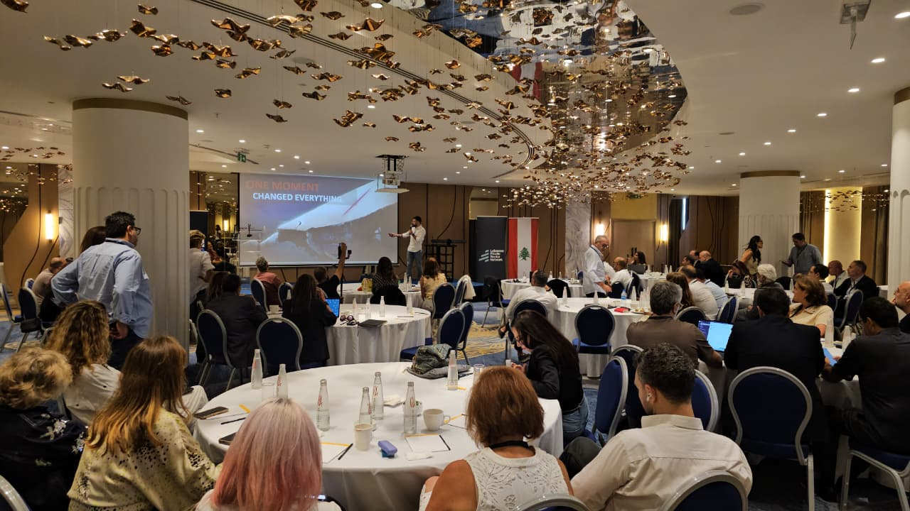
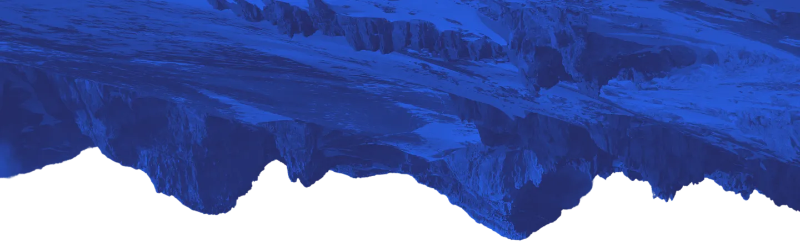
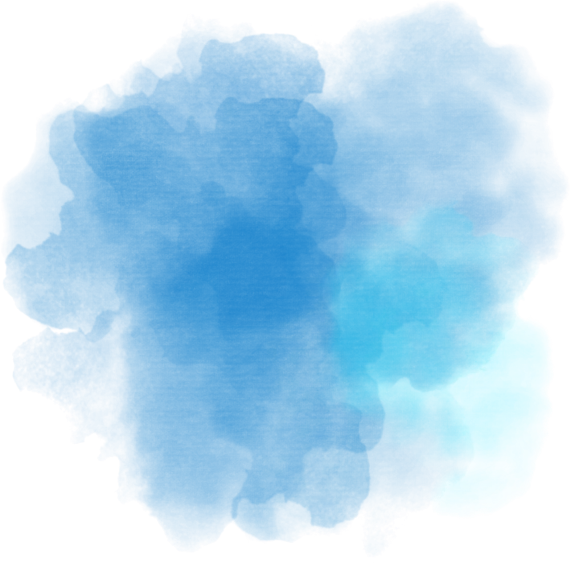
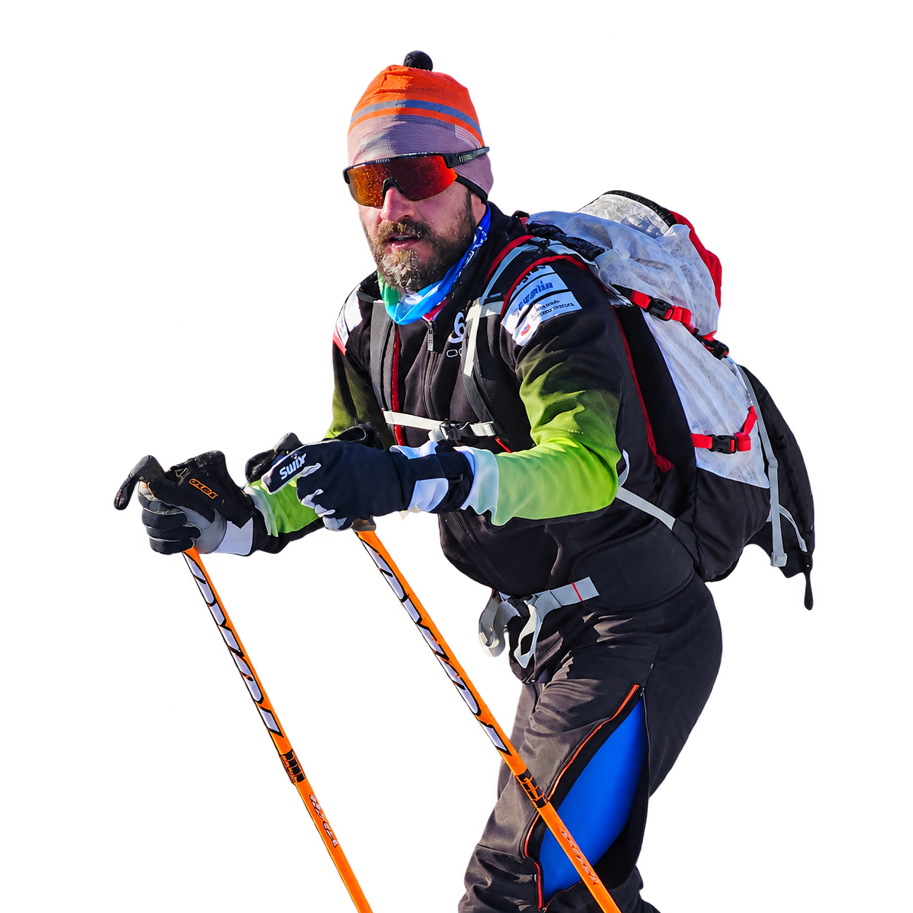

FIRST
Lebanese Olympic qualifier
First Lebanese in history to qualify for the Olympic Games in cross-country skiing.
SAMER IS ONE OF THE TOP INSPIRATIONAL
SPEAKERS IN LEBANON.

Two-time Olympian and keynote speaker on resilience, mindset, and performance.
Pressure, setbacks, and uncertainty are part of working life. For leaders and teams, the challenge is staying focused, adapting when plans change, and continuing to make progress when results take time.
Samer Tawk understands what it means to start again. After representing Lebanon at the 2018 Winter Olympics, a life-changing accident left him with severe injuries and lasting physical limitations. Rebuilding his strength and learning to work with a changed body became part of his preparation for a second Olympic Games in 2026.
Drawing on his experience as an athlete and coach, Samer speaks about the decisions behind that return: adjusting expectations without losing ambition, maintaining discipline through slow progress, and finding a workable next step when the original plan is no longer possible.
His keynotes connect those experiences to the pressures teams face every day. At the heart of his message is a simple principle: “1% progress every day.” It gives audiences a practical starting point for turning demanding goals into consistent action.

Samer has overcome severe injuries, lasting physical limitations, and personal setbacks to compete at two Olympic Games—before and after a life-changing accident.
Resilience built through experience. His journey from intensive care back to the Olympics brings a credible perspective on overcoming setbacks and rebuilding momentum.
Performance principles that apply to business. He connects Olympic preparation with the discipline, consistency, and accountability teams need to achieve demanding goals.
A grounded perspective on change. Rebuilding his career with lasting physical limitations offers meaningful lessons in adapting, solving problems, and moving forward under pressure.
A clear message audiences can apply. His principle of “1% progress every day” turns ambition into a practical focus on consistent, deliberate action.
A personal story with professional relevance. Drawing on speaking experience across TEDx, universities, and businesses, Samer connects with audiences around shared challenges: pressure, uncertainty, and the drive to improve.


Change Your Life by changing the Question | Samer Tawk | TEDxMUBS
First Lebanese in history to qualify for the Olympic Games in cross-country skiing.
PyeongChang 2018
Milano Cortina 2026
Cross-country skiing
Cross-country skiing
TEDxMUBS
Rising from the Ashes